SPACE 06
06 女主衣帽间
现状、需求与预期效果，放在一起讨论。
06 女主衣帽间装修需求
所有尺寸均为参考；施工、定制、开孔和下单以现场实测、实物安装要求及确认图纸为准。列入配置不等于已经购买。
现场实拍

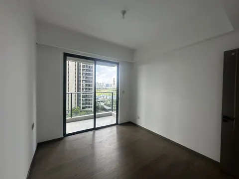
望向阳台方向（南）

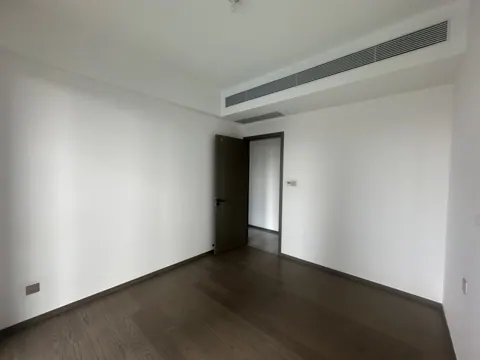
望向门口方向（北）
DESIGN INTENT
预期效果
仅展示需求文档中列出的效果图。
AI 照片级效果以 3ds Max 的空间与家具布局为依据，灯光、织物与小摆件用于氛围示意；实物配置以本页需求及设备清单为准。以下效果图按最新3.53柜体布局更新（梳妆台正面近景沿用已确认画面），包含半封阳台、双排分区衣柜、半圆顶格及走廊侧幽灵门；施工尺寸以模型复核、现场实测和确认图纸为准。

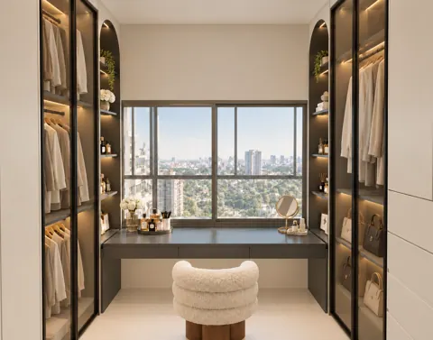
衣帽间望向阳台

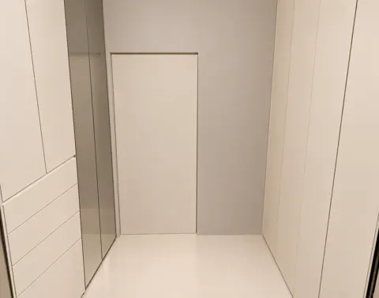
衣帽间望向门口

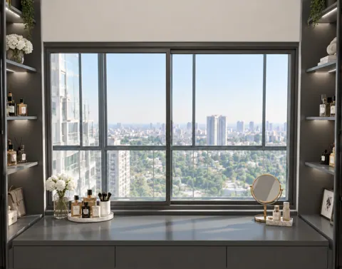
梳妆台正面

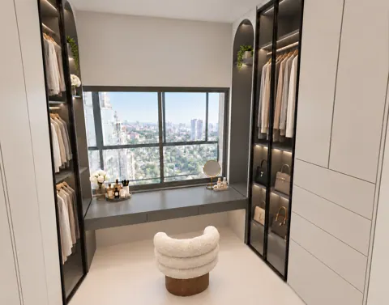
梳妆区与双排衣柜斜向全景
本次模型更新（2026-11-01）
3.53模型 · 南向检查图 · 北向门洞检查图
尺寸为模型占位，门洞移位、半墙及窗扇连接节点需复尺深化；不是施工图。
功能与布局
- 风格定位：奶油白风格，奶油白柜门和柔光砖搭配炭黑色梳妆台及储物架，结合镜面柜门与柔和照明。
- 梳妆与护肤：拆除南侧原阳台移门，原门洞下部砌半墙，窗下设置梳妆台，上方改推拉窗；梳妆台两侧上方设储物架，与东西两排衣柜的南端衔接。台面下保留浅抽屉、坐姿腿部空间及mini护肤冷藏设备的选配条件；不再采用西墙H型玻璃展柜梳妆组合。
- 衣物收纳：东西两面墙分别设置直排衣柜，不再采用北墙＋东墙L型柜；北墙靠西侧衣柜端留出入口。按长衣、短衣、叠放、换季储物划分功能区，配置垂直立板或独立模块，按下表落实两层及三层的指定分区。保留两面柜墙有效收纳；柜门按最新功能分区图采用玻璃门、木门与镜门组合，不再全柜使用镜门。
- 首饰收纳：原首饰岛柜保留为备选；当前模型中暂隐藏，不默认占用双排衣柜之间通道。结合抽屉开启、梳妆椅和通行宽度再确定是否摆放及位置。
- 门与收纳优先级：北墙原门洞避开两侧衣柜，移至白模所示靠西侧衣柜端，采用幽灵门；旧门洞非新开口重合的部分封补。门扇滑移与衣柜开门互不冲突，不做地轨，隐蔽机构及受力墙体由门厂现场确认。衣帽间南侧不再作为出入阳台通道，以半墙和可关闭推拉窗分隔；北门作为进出路线。工作与直播分隔要求保留，具体隔声表现另行确认。
- 阳台关联：西侧阳台为月亮椅休闲区。
西墙由南侧梳妆台向北门依次为两扇玻璃门、两扇木门（下方抽屉）、两扇无框镜门，共六扇。效果图采用柔和日光，玻璃门柜一侧不绘制直射光斑；画面不作为日照模拟结论。
最新柜体功能分区
功能分区以以下最新文字为准，《衣柜功能分区.jpg》作为位置参考；左右及上下按该图位置描述（站在北门朝南窗看，左为东侧、右为西侧）；《衣帽间半封阳台效果.jpg》用于参考梳妆台与柜体衔接、细框玻璃门及展示架形式，采用已确认的深色梳妆台、深色储物架及浅奶油色实门配色，地面采用奶油白柔光砖。
| 图中位置 | 功能与门板 | 模型落实 |
|---|---|---|
| 上方中间 | 梳妆台 | 南窗下连续台面、浅抽屉，保留坐姿空间 |
| 右上角 | 小冰柜 | 梳妆台右端低位独立设备占位，上方保留储物架；散热空间待实物深化 |
| 左侧／东墙衣柜 | 柜内全部三层 | 保留竖向承重立板；三层为内部分区，不表示柜门横向分成三截，挂衣净高按衣物深化 |
| 右上／西墙玻璃门衣柜 | 均分上下两层，上挂衣、下放包 | 上半部一根挂杆，下半部格子放包；保留两扇通高细黑框玻璃门；临窗独立半圆顶格储物架不变 |
| 右侧中部／西墙木门柜 | 均分上下两层，下抽屉、上挂衣 | 上半部两扇奶油色木门、柜内挂衣；下半部四个同宽等高的封闭抽屉，抽面齐平、分缝均匀，不留开放格；效果图按同一柜面透视表现 |
| 右侧下部／西墙近北门 | 柜内三层，两扇无框镜门 | 通高全身镜效果，取消黑色外框，仅保留必要细窄门缝；内部分层不延伸为镜面横向分缝 |
| 地面 | 柔光砖，奶油风、奶油白偏黄 | 奶油白偏黄低光泽材质；砖型和规格待选 |
硬装与定制
-
实施范围与柜体原则：装修公司负责阳台旧移门拆除、原洞口下部半墙与上部推拉窗、窗下梳妆台及两侧储物架、东西直排衣柜、北墙门洞移至白模所示靠西侧衣柜端及幽灵门、相关基层加固和开关移位。柜体原则落地自承重，储物架依附柜体结构；门窗五金受力及墙体固定按专业深化，不依赖假天花承重。
-
地面：原木地板全部拆除，检查并处理基层及潮湿渗漏问题后找平铺瓷砖；核对门底、门槛、柜体和相邻地面完成面高度，铺贴及美缝选样确认。采用奶油白偏黄的柔光地砖，减少强反光和眩光；具体品牌、型号及规格选样确认。
-
墙面：采用简洁的奶油色哑光乳胶漆，基层处理、产品系列及色号由装修公司提交，打样确认；镜面、柜体及其他明确的专项饰面按对应要求处理。
-
柜门与抽屉：西墙由南向北依次为两扇玻璃门、两扇木门（下方四个等高抽屉）、两扇镜门，共六扇柜门。玻璃门柜均分上下两层，上层挂衣、下层分格放包；木门柜上挂衣、下抽屉，抽屉同宽等高、分缝均匀。东墙衣柜内部全部采用三层分区，层板位置与挂衣净高随实物深化。内部分层不等于外部门板横向分段。
-
镜面：西墙近北门的一组采用两扇通高无框镜门，呈全身镜效果，不做可见黑边框，仅保留必要的细窄门缝，不做横向镜面分缝；其余柜体按玻璃门及奶油色木门分区。无框外观的收边、防护及五金由柜商深化。南窗前梳妆镜不妨碍窗扇开启、检修和遮阳。
-
日照与消防安全：装修公司须现场核验真实朝向、阳台及门洞尺寸、邻楼遮挡，检查不同季节尤其冬季低角度西南日照，以及柜门、幽灵门及推拉窗开启和关闭时的直射与反射光路，玻璃门柜所在一侧按业主反馈无阳光直射，对面柜体可能受晒；真实日照与反射路径仍须现场核验，重点核对镜面柜门及梳妆区。柜门采用平整平面镜，基层与安装不得使镜面明显弯曲形成凹面；平面镜本身不等同于聚光镜，但不得据此免除日照与反射检查。放大化妆镜、曲面反光摆件、水晶球及可能聚光的玻璃容器避开直射及反射阳光，不使集中光斑落在窗帘、衣物等可燃物上。阳台与衣帽间采光路径配置可有效遮挡直射阳光的遮阳措施，装饰纱帘不作为唯一措施；兼顾反射眩光、物品日晒及褪色。深化方案明确镜面平整度、遮阳方式和摆件避让要求，安装后现场复核；具体日照时段以实测或经校核的日照模拟为准。
-
衣柜功能与结构：长衣、短衣、叠放及换季储物分区出图，标注各区有效净宽、净深、净高及挂杆位置；净高扣除板厚、五金和衣架占位，按实际衣物校核，本次按分区图指定两层或三层；各层有效净高仍需按实际用途核对，三层镜门柜不默认每层均可挂长衣。允许并应按跨度及荷载设置适量垂直立板或独立模块侧板，将荷载传至落地支撑，不能仅依靠两块通长横板。柜商须结合板材、层板跨度、挂衣荷载及镜面门重量，说明承重、防挠、侧向稳定、防倾覆、模块连接和五金选型；接受组合式衣柜，兼顾拆移、安装及维修，执行全屋柜体自承重原则。功能分区与结构方案经业主确认后制作；历史三层参考图仅供外观参考，现模型功能分区也需复尺深化，不作为内部等分或无竖板施工依据。
-
梳妆组合柜：南侧窗下梳妆台，两端上方储物架（顶格半圆拱形）；台高参考750 mm、台下浅抽屉，保留腿部空间。小冰柜放在梳妆台右端低位，散热及开门范围随实际型号确认；模型尺寸仅为布局占位。
-
门型确认与配套：已选北墙靠西侧衣柜端幽灵门，模型按白模比例暂用约1000×2400 mm门洞，轨道设在走廊侧，门扇沿走廊向东滑移；白模无尺寸标注，开口尺寸和定位须复尺确认；由门厂核对滑移净空、隐蔽五金受力、墙体加固及开关移位，确认隔声与遮光表现、检修方式和总价。旧旋转门、门后香水架及门边展示柜方案取消。
-
照明：梳妆镜与组合展示柜灯共用一份电源；衣柜照明另列。
家具与设备
“否”按成品选购；“待确认”不代表已决定定制。尺寸以现场实测及最终确认图纸为准。
商品图、规格图及购买链接均为选型参考，不限定购买渠道或最终款式。若有同款且性价比更高的选择、风格更合适的家具，或因现场尺寸、安装条件等客观原因需要调整，可提出替代方案，说明差异及更换原因，经业主确认同意后方可更换。
| 项目 | 数量 | 是否定制 | 参考尺寸 / 选型要求 | 商品图 / 规格参考 | 购买链接（参考） | 备注 |
|---|---|---|---|---|---|---|
| 南窗下梳妆台及两侧储物架 | 1 组 | 是 | 台高参考750 mm；长度按门洞及双排衣柜净距复尺 | 半封阳台参考 | 待深化 | 两端上方储物架（顶格半圆拱形）由柜体承托，保持坐姿空间与窗扇操作空间 |
| 分区衣柜 | 1 套 | 接受定制或组合式 | 东西两墙直排；东墙内部三层；西墙由南向北为玻璃门、木门、无框通高镜门各两扇，木门下方四个同宽等高抽屉；配置必要承重立板或模块侧板；板材原则 ENF | 功能分区参考 | 待定制方案 | 西墙玻璃柜上挂衣、下放包；镜门无可见黑边和横向分缝；移门洞不得减少收纳；净高、承重、镜门五金及模块连接由柜商深化 |
| 北墙幽灵门 | 1 樘 | 是 | 门洞移至北墙靠西侧衣柜端，避让东西衣柜；门宽高现场确认 | 幽灵门参考 | 待深化 | 无地轨；核对隐蔽机构、墙体受力、开关移位、门扇滑移与隔声 |
| 阳台洞口半墙与推拉窗 | 1 组 | 是 | 拆原移门，下砌半墙、上做推拉窗；原结构边界待专业复核 | 南向白模 | 待深化 | 与梳妆台、窗台、防水收口及窗扇操作统一设计 |
| 护肤品矮冷藏柜 | 1 台 | 否 | mini 矮款；已在梳妆台右端下方建模占位，型号、尺寸、散热及温区待选 | 原选型资料 | 待选 | 核对设备散热、开门、检修和腿部空间 |
| 首饰柜 | 1 个 | 否 | 参考宽 800 × 深 750 × 高 850 mm；玻璃展示顶、分格收纳、两侧各四层抽屉 | 实拍、规格 | 淘宝 | 备选，现模型暂隐藏；柜内及台面首饰为摆放示意，核对四周通行与双侧抽屉开启空间 |


水电
用电设备
- 基础照明、衣柜顶部灯带与镜面柜门统筹。
- 梳妆 LED 镜保留。
- 镜面随衣柜门设置，幽灵门不默认加镜面，不另做西墙独立镜墙灯。
- 护肤品冷藏设备、LED 镜和美容工具考虑供电。
- 衣柜顶部灯带驱动另列。
- 阳台休闲区供电见大阳台需求，不重复计数。
插座、用电设备和开关统一列在下表；同一设备的供电只计一次。用电设备采用插座还是直接接线随最终选型确定，安装高度写在位置要求中；开关按面板位置计数，不按按键数计。数量包含暂定项，现有可复用位置现场核对。
| 类别 | 设备 / 用途 | 数量 | 位置 / 要求 | 状态 |
|---|---|---|---|---|
| 插座 | 护肤品冷藏设备 | 1 个 | 梳妆柜旁或下方，独立供电，按最终设备定位 | 配置 |
| 插座 | 梳妆台自带柜灯及 LED 镜 | 1 个 | 已确认共用一份电源，不重复计数；柜灯与镜灯不重复计数 | 已确认 |
| 插座 | 美容工具 | 1 个 | 按一个使用位预留 | 暂定 |
| 用电设备 | 女主衣帽间 · 基础照明 | 1 组 | 与柜顶、镜墙协调，梳妆镜供电已在插座项计入。 | 暂定 |
| 用电设备 | 衣帽间衣柜照明 | 1 组 | 模块自由搭配，需柜商按布局确定驱动器数量，不能保证一组覆盖所有柜子 | 暂定 |
| 开关 | 女主衣帽间 · 照明开关 | 1 处 | 随最终门洞及进出路线定位，核对移位工程 | 数量已由业主确认 |
汇总：插座 3 个，另需供电的设备 2 项，照明开关 1 处。 用电设备后续即使采用插座供电，也不再重复增加同一项需求。
用水设备
当前未提出固定上水、下水接管需求；如设备选型新增接管要求，再补列对应设备及接口。
待确认事项
| 区域 / 专项 | 待确认内容 | 对设计及报价的影响 |
|---|---|---|
| 衣帽间衣柜 | 按相同复尺条件对比调整前后的挂衣长度、有效储物容积、抽屉及取用空间，明确长短挂衣分区、承重立板及镜门五金 | 不得用扩大通道或增加展示面积替代减少的衣物收纳；按最新玻璃门、木门、镜门分区保留效果 |
| 衣帽间门与展示 | 核对北墙靠西侧衣柜端门洞及幽灵门滑移、受力墙体、开关移位、南侧半墙推拉窗和隔声分隔 | 按已选双排衣柜与北门布局核对收纳及通行；封洞、拆补及门柜费用分别说明 |
| 衣帽间冷藏 | 面膜等存放温区，冷藏设备类型与型号，以及梳妆柜旁 / 下方的安装位置 | 设备外形、散热和供电；不同时叠加多台备选 |
灵感与风格参考
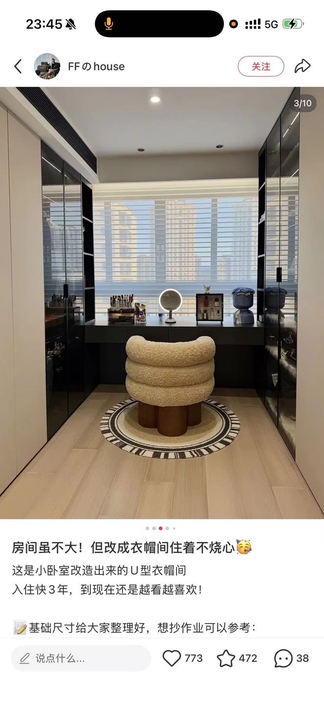
半封门梳妆台
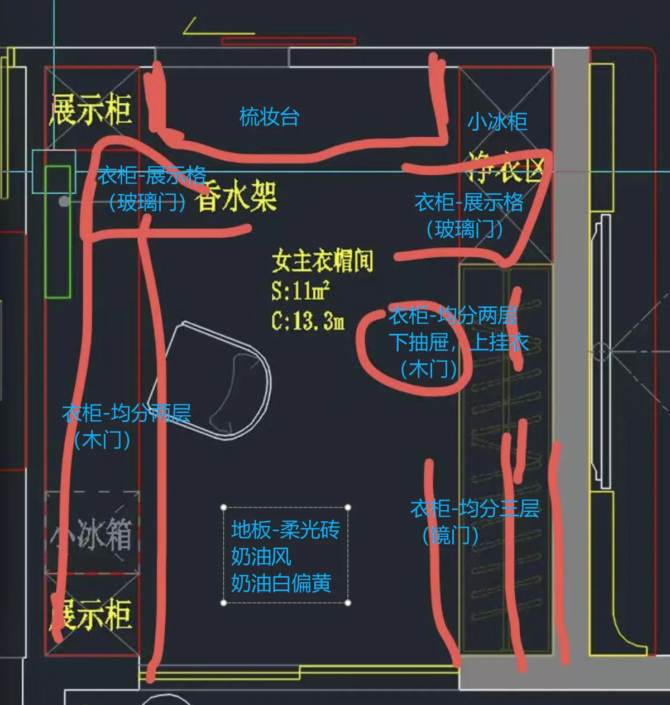
衣柜功能分区

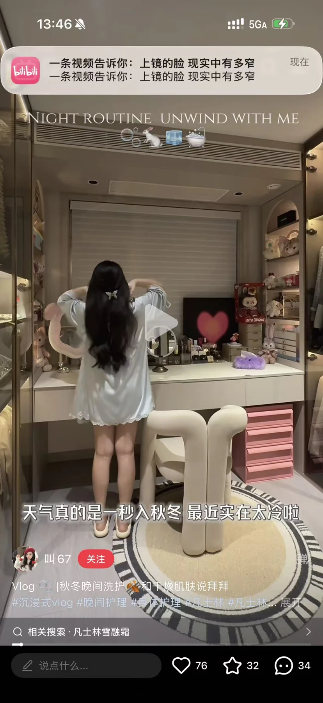
梳妆台

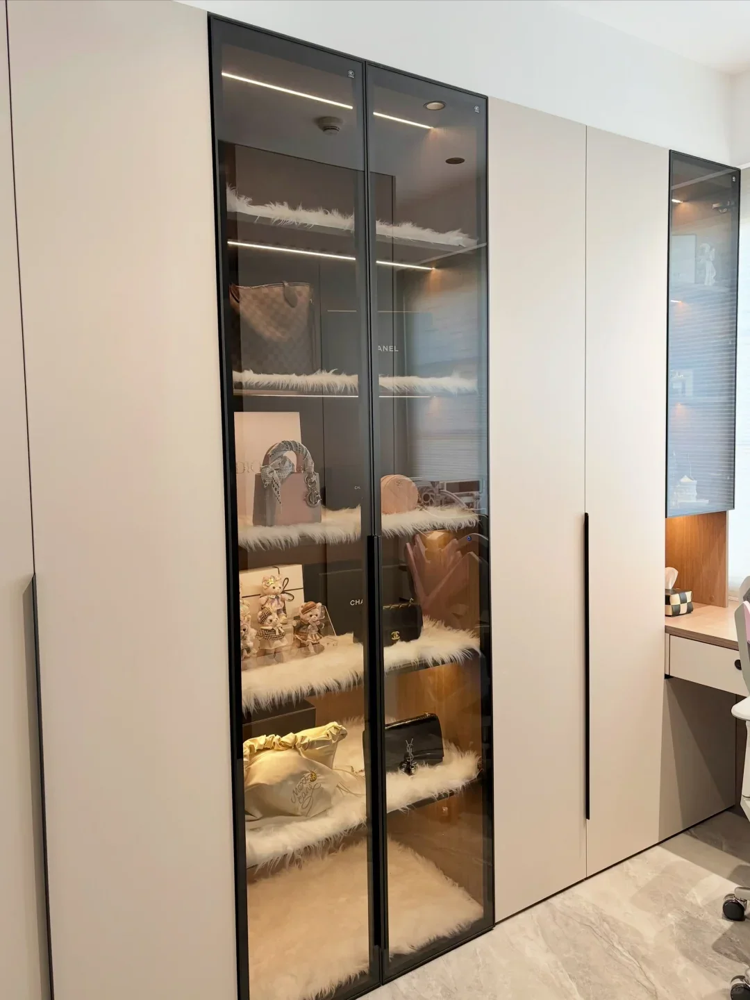
玻璃门衣柜
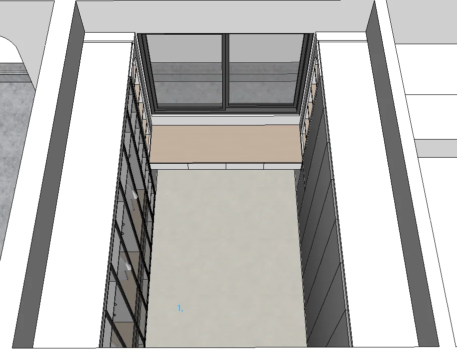
半封阳台白模·南

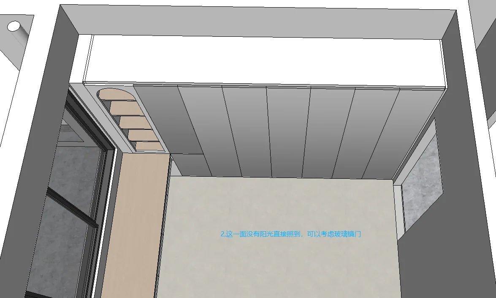
半封阳台白模·西

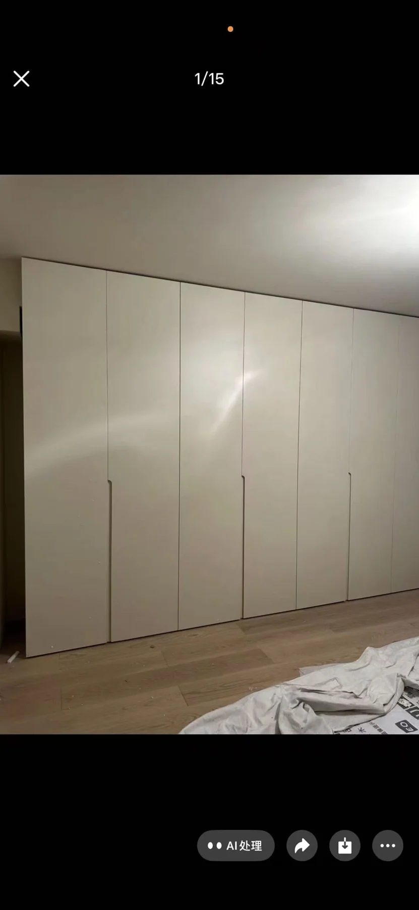
柜门把手
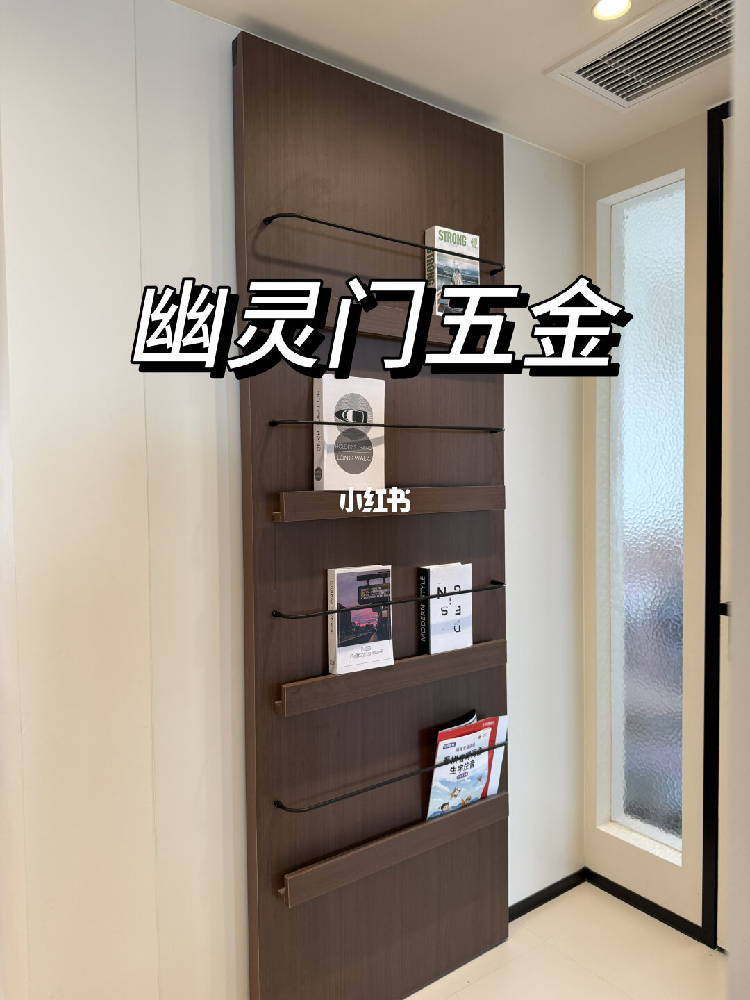
幽灵门
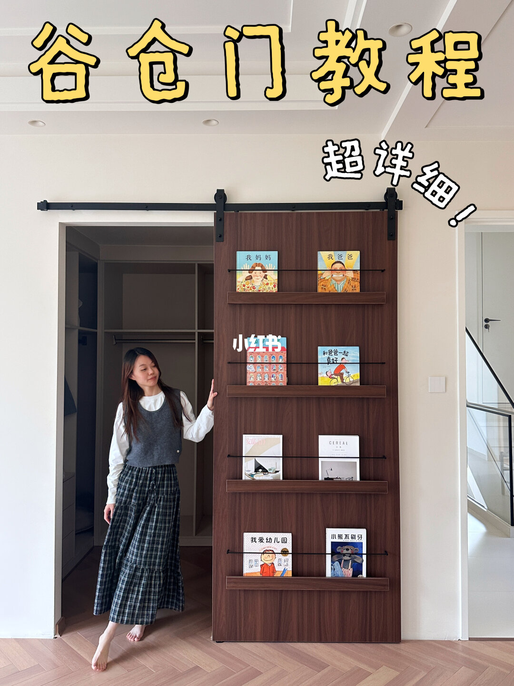
谷仓门

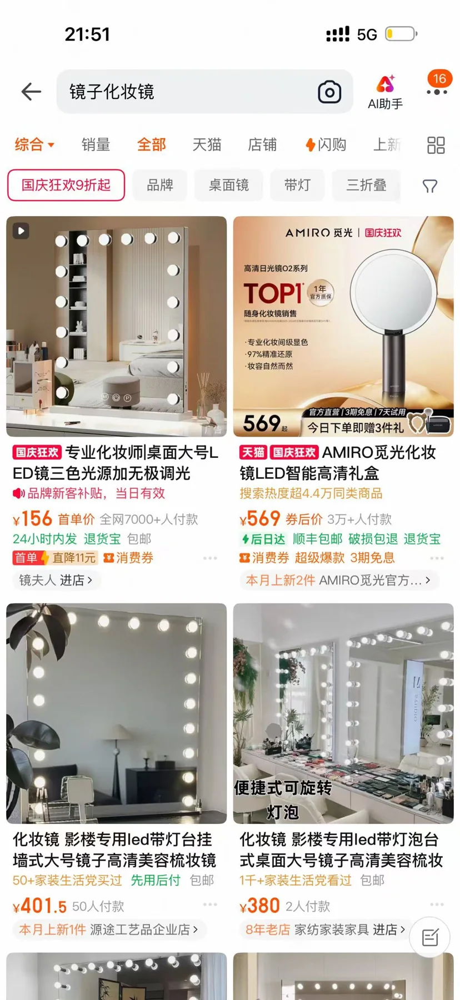
化妆镜

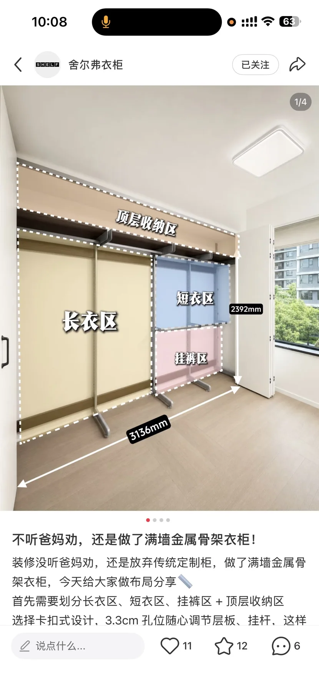
衣柜分区
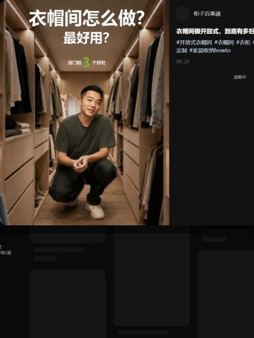
衣帽间做开放式，到底有多好用？（优点：多了移动空间）
用金属立柱（舍尔弗品牌）改出步入式衣帽间
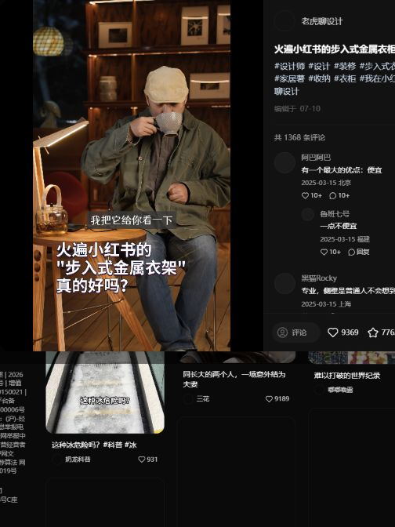